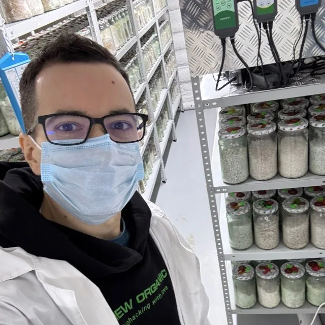
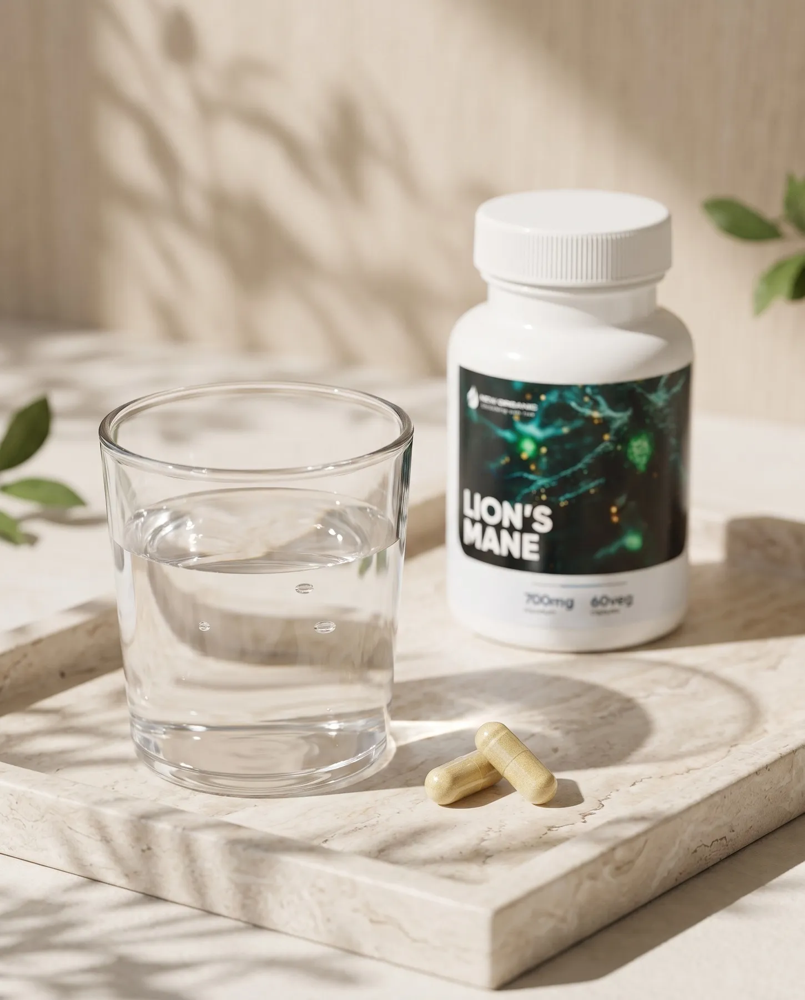

Биохакинг с любовью
New Organic помогает людям раскрыть природный потенциал и по-новому взглянуть на здоровье тела и головы.

Александр Самосудов
В 2012 году Александр переживал самый тяжёлый период в жизни. На нём висели большие долги, сил почти не осталось, и этот период привёл его в Сочи.
Там он целыми днями ходил по горным лесам и собирал грибы: ежовик, рейши, мухоморы. Тогда и появилась идея, на которой сегодня стоит New Organic: помогать себе восстанавливаться с помощью природных соединений.
Всё, что мы сейчас производим, Александр сначала проверил на себе. Он выбрался из трудного состояния, раздал долги и построил крепкий бизнес.
Сегодня в New Organic каждый день работают больше 20 человек. Александр остаётся идейным вдохновителем и лично следит, чтобы в каталог не попал ни один слабый продукт.

Марафон по биохакингу бесплатно
Несколько раз в год мы запускаем двухмесячный марафон в Telegram. Основатель New Organic ведёт живые эфиры, кураторы каждый день отвечают на вопросы. Участие бесплатное для всех, кто в сообществе.
Внутри практики живого питания, очищения организма, медитации и йога.